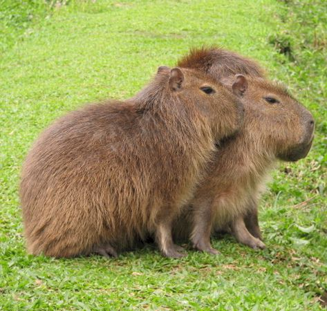

Описание капибары
Капибара – полуводное травоядное млекопитающее, распространенное по берегам водоемов Южной и Центральной Америки, единственный представитель семейства водосвинковых. Благодаря своим впечатляющим размерам носит статус рекордсмена среди грызунов современной фауны.Длина тела взрослой особи колеблется от 107 до 134 см, рост составляет 50-64 см, а вес – 35-66 кг. Самки обычно крупнее представителей сильного пола. Максимальный зарегистрированный вес дикой самки равняется 91 кг, а крупнейшего самца - 73,5 кг. Капибара имеет тяжелое телосложение и короткую, крупную голову. Конечности довольно короткие, задние немного длиннее передних. Пальцы соединены маленькими плавательными перепонками.
Вернуться на главную страницу